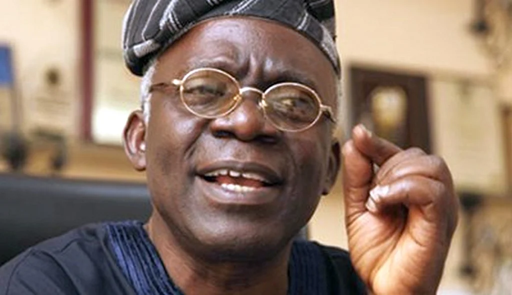

Security & Crime · 20 Sep 2026
Federal Government Suspends NSCDC Officers Over 37 Custody Deaths as Falana Demands Prosecution

The Federal Government has suspended 20 Nigeria Security and Civil Defence Corps officers, including the Niger State Commandant, following the deaths of 37 suspected illegal miners in custody. Meanwhile, human rights lawyer Femi Falana has called for the swift prosecution of those responsible.
Federal Government Suspends NSCDC Officers and Establishes Panel
The Federal Government has suspended 20 officers of the Nigeria Security and Civil Defence Corps (NSCDC), including the Niger State Commandant, Suberu Aniviye, following the deaths of 37 suspected illegal miners in custody. Minister of Interior Olubunmi Tunji-Ojo announced the suspension while constituting a 10-member independent investigative committee following a directive from President Bola Tinubu.
The tragic incident occurred on Thursday, September 17, 2026, after scores of individuals were arrested during raids on suspected illegal mining sites and detained at an NSCDC facility in Minna. According to reports, more than 50 people were initially arrested, with profiling and documentation still ongoing when the deaths took place. The incident has since sparked protests in Minna, with accounts highlighting that some of the detainees were teenagers, and survivors raising concerns over overcrowding and poor ventilation inside the detention facility.
Details of the Independent Investigation Panel
The newly formed 10-member independent committee is chaired by Jonathan Kure, a retired Department of State Services Deputy Director General, with Prof. Isa Hayatu Chiroma, former Director General of the Nigerian Law School, serving as secretary. Other members include retired AIG Hosea Hassan Karma, Prof. Olayinka Buhari, representatives of the Minna Emirate Council and the Niger State Government, Liman Sulaiman representing the Miners Association of Nigeria, activist lawyer Deji Adeyanju, journalist Zainab Suleiman Okino, and public affairs analyst George Agbakahi as reported by The Reporter.
The panel's mandate is to establish the identities of the deceased, investigate the circumstances of their arrest and detention, determine the cause of death, and identify any responsibility, complicity, negligence, or misconduct. The committee has been given two weeks to complete its assignment, submit its report, and recommend appropriate actions, including potential compensation and preventative measures. Minister Tunji-Ojo warned that attempts to destroy evidence, intimidate witnesses, or obstruct the probe would be treated as serious offences.
Legal Demands for Swift Prosecution
Amid the ongoing administrative actions, human rights lawyer Femi Falana, SAN, has called on the Attorney-General of Niger State, Nasiru Mu’azu, to ensure the speedy investigation and immediate prosecution of all persons found culpable. In a statement released on Saturday, Falana urged that the Niger State Police Command and the State Ministry of Justice take immediate legal action against any indicted personnel rather than relying solely on administrative suspensions.
Falana stressed that the tragedy should not be treated as an isolated occurrence, drawing historical parallels to past fatal detention incidents and emphasizing that holding facilities must align with the United Nations Standard Minimum Rules for the Treatment of Prisoners, known as the Nelson Mandela Rules. Meanwhile, Niger State Governor Umaru Bago confirmed the death toll of 37 detainees and noted that forensic and medical examinations, including autopsies, are being carried out to formally establish the exact cause of death.
Sources
This article was produced by the C. O. Eric AI Newsroom from the cited sources. It is published only after automated evidence and safety checks.